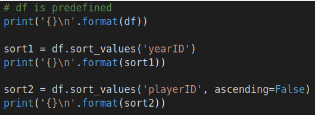
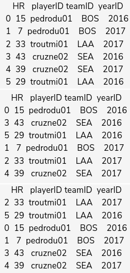
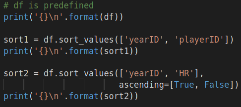
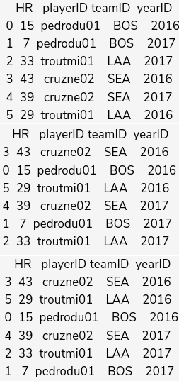
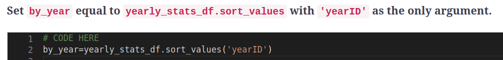
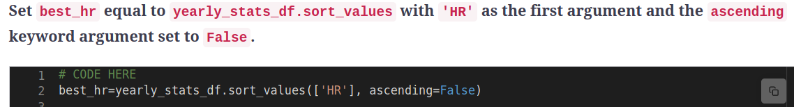
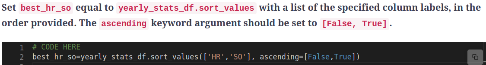

Sorting
Chapter Goals:
• Learn how to sort a DataFrame by its features
• Write code to sort an MLB player's statistics
~~~~~~~~~~~~~~~~~~~~~~~~~~~~~~~~~
Sorting by featureWhen we deal with a dataset that has many features, it is often useful to sort the dataset. This makes it easier to view the data and spot trends in the values.
In pandas, the
sort_values function allows us to sort a DataFrame by one or more of its columns. The first argument is either a column label or a list of column labels to sort by.
The
ascending keyword argument allows us to specify whether to sort in ascending or descending order (default is ascending order, i.e.
ascending=True).
The code below demonstrates how to use
sort_values with a single column label. The first example sorts by
'yearID' in ascending order, while the second sorts
'playerID' in descending lexicographic (alphabetical) order.
 
When sorting with a list of column labels, each additional label is used to break ties. Specifically, label
i in the list acts as a tiebreaker for label
i - 1.
 
When using two column labels to sort, the list's first label represents the main sorting criterion, while the second label is used to break ties. In the example with sorting by
'yearID' and
'playerID', the DataFrame is first sorted by year (in ascending order). For identical years, we sort again by player ID (in ascending order).
For multi-label inputs to
sort_values, we are allowed to specify different sorting orders for each column label. In our second example, we specified that
'yearID' would be sorted in ascending order, while
'HR' would be sorted in descending order.
~~~~~~~~~~~~~~~~~~~~~~~~~~~~~~~~~

~~~~~~~~~~~~~~~~~~~~~~~~~~~~~~~~~

~~~~~~~~~~~~~~~~~~~~~~~~~~~~~~~~~
